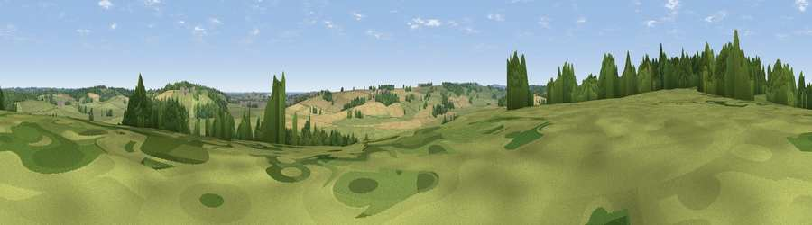

Viewpoint near Peasmarsh
#40781 in England · top 72% of its area beats it · near PeasmarshWhere it is
The exact computed spot (TQ 89775 21325). Click the marker for map links.
The view, rendered

A 360° render of this exact spot computed from the terrain model, tree cover and land cover — summer colours, afternoon light, calibrated against photographs of famous viewpoints. Real trees, hedges and buildings will differ in detail.
The panorama
Grey silhouette: terrain skyline in each direction (720 bearings, Earth curvature and refraction included). Dashed green: skyline with trees (+15 m) and buildings (+8 m) as obstacles. Blue strip: how far the ground is visible on each bearing.
Where the view opens
Wedge length = distance to the farthest visible ground on that bearing (vegetation-aware). Rings at 10, 25 and 50 km.
What fills the view
58% grassland · 23% cropland · 17% woodland · 2% built-up ·
Angular shares of the visible panorama (visual magnitude), not map area. Landscape diversity 0.47 (0–1 Shannon).
Key numbers
More beautiful places nearby
The staircase of upgrades: each row has a higher view potential than everything closer. Driving times are estimates from straight-line distance, calibrated against real road routing — check an actual route before setting out.
| Place | Direction | Drive | Score |
|---|---|---|---|
| Viewpoint near Playden | E · 1 km | ~4 min | 36.7 |
| Leasam Hill | E · 2 km | ~5 min | 53.1 |
| Viewpoint near Udimore | SSW · 2 km | ~6 min | 59.7 |
| Viewpoint near Stone in Oxney | NE · 7 km | ~14 min | 60.1 |
| Viewpoint near Fairlight | SSW · 10 km | ~19 min | 75.1 |
| Viewpoint near Fairlight | SSW · 10 km | ~20 min | 78.2 |
| Viewpoint near Fairlight | SSW · 11 km | ~20 min | 79.0 |
| Viewpoint near Willingdon | WSW · 37 km | ~56 min | 83.4 |
50.96009, 0.70096 · source: screening · position refined by local search. Computed location — check access rights before visiting.